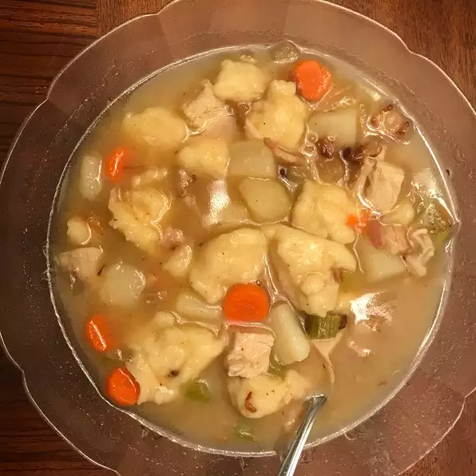

Dumpling Soup

Description
My mom always made this potato soup with dumplings on wash day as it was quick to make and very satisfying. It's still a favorite today for lunch. Pepper may be added at the table. Serve with fresh bread and butter. This is a very hearty soup; if served as supper, it is a complete meal.
Ingredients
- 1½ cups all-purpose flour, or more as needed
- 2 teaspoons salt, divided
- 1 teaspoon baking powder
- 1 large egg
- ¾ cup water, or as needed
- 1 tablespoon vegetable oil
- 6 medium potatoes - peeled and cubed
- 8 cups water
- 2 tablespoons butter
- 1 large onion, chopped
- 4 ounces sliced bacon, diced
Steps
- Mix together flour, 1 teaspoon salt, and baking powder in a medium bowl; set aside.
- Crack egg into a measuring cup; add enough water to equal 1 cup, then whisk with a fork. Gradually mix egg-water mixture and oil into flour mixture with the fork until a soft dough forms. Use your hands to knead dough until smooth and no longer sticky, adding more flour or water as needed. Cover the bowl; set aside until potatoes are ready.
- Place potatoes in a large pot with 8 cups water and remaining 1 teaspoon salt; bring to a boil. Cook until potatoes are tender, 10 to 15 minutes.
- Meanwhile, melt butter in a skillet over medium heat. Add onion and bacon; cook and stir until onion is golden and bacon is cooked. Set aside.
- When potatoes are cooked, pinch off small pieces of dough and drop them into boiling potato water. Turning dough in your hand will help keep it from sticking to your fingers.
- Once all of the dumplings have been added, stir in onion and bacon. Ladle some of the soup water into the skillet; swish it around to loosen the tasty bits and juices, then return to soup. Turn off heat; let soup stand for a few minutes before serving.
Back Home